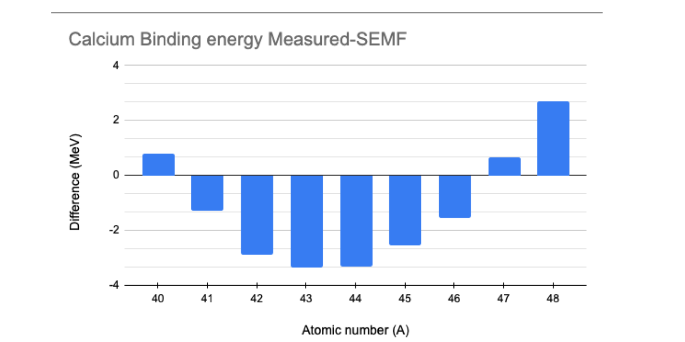

Unit 4 : Worked Problems#
4.1 Example. Spin and parity of ground states#
Evaluate the spin and parity of the ground states of the following isotopes:
\( ^{16}_{8}O \), \( ^{17}_{8}O \), \( ^{15}_{8}O \), \( ^{33}_{16}S \), \( ^{39}_{20}Ca \), \( ^{14}_{7}N \)
We use the energy levels diagram to fill the levels independently for protons and neutrons (example 6).
4.1.1 Oxygen \( ^{16}_{8}O \)#
This isotope of oxygen has 8 protons (\( Z = 8 \)) and 8 neutrons (\( N = 8 \)). Following the pairing hypothesis, the total spin of the nucleus is \( I = 0 \) and the parity is \( + \),
e.g. this is \( 0^+ \).
4.1.2 Oxygen \( ^{17}_{8}O \)#
This isotope of oxygen has 8 protons (\( Z = 8 \)) and 9 neutrons (\( N = 9 \)). Following the pairing hypothesis, the protons will pair up and have a total spin of 0 and a positive parity.
Therefore, we only need to consider the spin and parity of the unpaired neutron to identify the spin and parity of the nucleus.
The shell configuration of the neutrons is:
Therefore, the unpaired neutron has spin \( 5/2 \) and the parity \( (-1)^2 = +1 \) (the \( d \) shell corresponds to \( \ell = 2 \)).
E.g. this is \( (5/2)^+ \).
4.1.3 Oxygen \( ^{15}_{8}O \)#
This isotope of oxygen has 8 protons (\( Z = 8 \)) and 7 neutrons (\( N = 7 \)). Following the pairing hypothesis, the protons will pair up and have a total spin of 0 and a positive parity.
Therefore, we only need to consider the spin and parity of the unpaired neutron to identify the spin and parity of the nucleus.
The shell configuration of the neutrons is:
Therefore, the unpaired neutron has spin \( 1/2 \) and the parity \( (-1)^1 = -1 \) (the \( p \) shell corresponds to \( \ell = 1 \)).
E.g. this is \( (1/2)^- \).
4.1.4 Sulfur \( ^{33}_{16}S \)#
This isotope of sulfur has 16 protons (\( Z = 16 \)) and 17 neutrons (\( N = 17 \)). Following the pairing hypothesis, the protons will pair up and have a total spin of 0 and a positive parity.
Therefore, we only need to consider the spin and parity of the …
4.1.5 Calcium \( ^{39}_{20}Ca \)#
This isotope of calcium has 20 protons (\( Z = 20 \)) and 19 neutrons (\( N = 19 \)). Following the pairing hypothesis, the protons will pair up and have a total spin of 0 and a positive parity.
Therefore, we only need to consider the spin and parity of the unpaired neutron to identify the spin and parity of the nucleus.
The shell configuration of the neutrons is:
Therefore, the unpaired neutron has spin \( 3/2 \) and the parity \( (-1)^2 = -1 \) (the \( d \) shell corresponds to \( \ell = 2 \)).
E.g. this is \( I = (3/2)^+ \).
4.1.6 Nitrogen \( ^{14}_{7}N \)#
This isotope of nitrogen has 7 protons (\( Z = 7 \)) and 7 neutrons (\( N = 7 \)). We use the diagram to establish the level for both the protons and neutrons:
Since we have both an unpaired proton and an unpaired neutron, we cannot determine the sign of the nucleus. We can only say that this will be either 0 or 1, since it is a combination of two spin 1/2.
Experimentally, we observe spin \( I = 1 \).
The parity of the nucleus is the product of the parity of the unpaired proton \( (-1)^1 = -1 \) and that of the unpaired neutron, also \( -1 \).
Hence, the overall parity is positive, and we have a \( I = 1^+ \) state.
4.2 Example. Spin and parity of fluorine excited states#
The ground state of the radio-isotope \( ^{17}_{9}F \) has spin-parity \( (5/2)^+ \). A list of excited states can be found at:
https://www.nndc.bnl.gov/nudat3/getdataset.jsp?nucleus=17F&unc=nds
Two excited states are present with spin 1/2 and opposite parity at the energy levels of 495 KeV and 3104 KeV. Suggest possible configurations for these states.
This isotope of fluorine has 9 protons (\( Z = 9 \)) and 8 neutrons (\( N = 8 \)). In the ground state, the shell configuration of the neutrons is:
And that of the protons is:
So it is clear that the ground state has to have spin 5/2 and positive parity \( (-1)^2 \),
since the \( d \) shell corresponds to \( \ell = 2 \).
The spare proton can be excited from the level \( 1d_{5/2} \) to the \( 2s \) level,
resulting in an overall spin 1/2 and positive parity, since that is an \( s \) orbital.One proton on the \( 1p_{1/2} \) shell can be excited to the level \( 1d_{5/2} \).
This leads to two protons on \( 1d_{5/2} \) which, following the pairing hypothesis,
create a state of overall spin \( 0^+ \). One proton will then be left unpaired on
the \( (1p_{1/2}) \) level, leading to an overall spin-parity of \( (1/2)^- \).
The first excited level is moving a proton within the same shell, so it would result in
a lower excitation energy than the second level, where a neutron is moved from one shell to the consecutive one.
A diagram of the excited states of \( ^{17}_{8}O \) and \( ^{17}_{9}F \) is presented in Krane and is reported here showing the energy levels and possible shell configurations.
